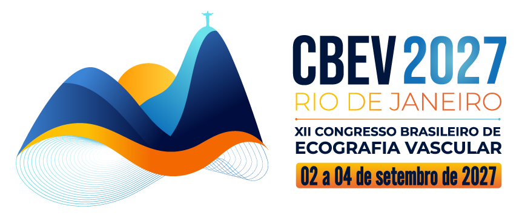
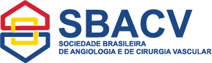

CONGRESSO BRASILEIRO DE ECOGRAFIA VASCULAR
ECOA,
RIO!
Do Diagnóstico à Intervenção.
A Ecografia Vascular na prática.
Um congresso 100% prático.
Experiências e tecnologias para a rotina do especialista.

Inscrições em breve ↗UM NOVO ENCONTRO.
UM CENÁRIO INSPIRADOR.
O conhecimento evolui.
A prática também.
O Congresso Brasileiro de Ecografia Vascular reúne especialistas de diferentes regiões do país para discutir a imagem vascular em suas diversas aplicações — do diagnóstico e planejamento à tomada de decisão e ao acompanhamento de procedimentos.
Em 2027, esse encontro acontece no Rio de Janeiro com uma programação fortemente voltada à prática: estações de hands-on, procedimentos ecoguiados ao vivo e workshops para a rotina do especialista.
Ciência que se conecta à prática ↗Achados, protocolos e interpretação para apoiar a tomada de decisão.
Novas tecnologias, técnicas e aplicações da Ecografia Vascular.
Discussões objetivas sobre os desafios encontrados na prática.
Conhecimento aplicado.
Da discussão à execução.
Estações de hands-on, procedimentos ecoguiados ao vivo — arteriais e venosos — e workshops dedicados a temas e tecnologias de aplicação direta na rotina do especialista.
DESTAQUES DA ABORDAGEM CIENTÍFICA
Entre os destaques, a ecografia vascular com óculos inteligentes (Smart Glasses-Assisted Ultrasound) amplia o espaço para discutir tecnologias aplicadas à rotina dos especialistas.
O próximo capítulo está em construção.
Programação completa em breve.Aprofundar conhecimentos, discutir condutas e compartilhar experiências com quem atua na evolução da Ecografia Vascular no Brasil.
Aprendizado com foco na aplicação da Ecografia Vascular à rotina do especialista.
Abordagens arteriais e venosas que conectam imagem, planejamento e execução.
Temas e tecnologias de aplicação direta na prática clínica.
Troca de experiências sobre desafios presentes no dia a dia dos especialistas.
04 / RIO DE JANEIRO 2027
Durante três dias, o Rio será o ponto de encontro de profissionais interessados em conhecimento, tecnologia e evolução da Ecografia Vascular.
Av. Lúcio Costa, 5400 - Barra da Tijuca, Rio de Janeiro - RJ
Faça parte do CBEV 2027.
Um ambiente especializado para relacionamento institucional, apresentação de tecnologias e aproximação entre empresas e profissionais da área vascular.
O Projeto de Patrocínio contará com diferentes modalidades de participação e oportunidades de exposição de marca.
Oportunidades comerciais ↗CBEV 2027 • NOSSO ENCONTRO TEM DATA
02 a 04 de setembro de 2027 · Rio de Janeiro
As informações sobre inscrições
serão divulgadas nesta página.
